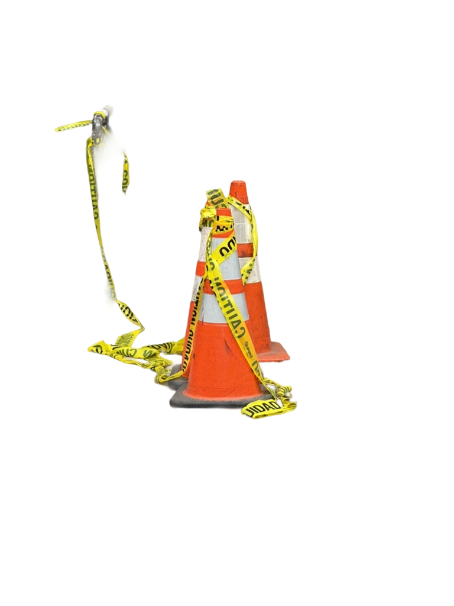
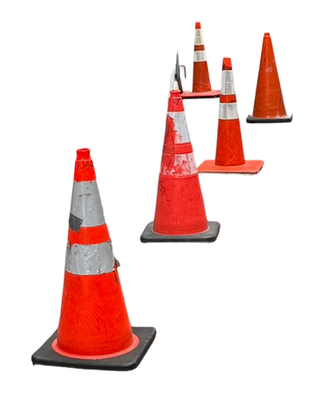
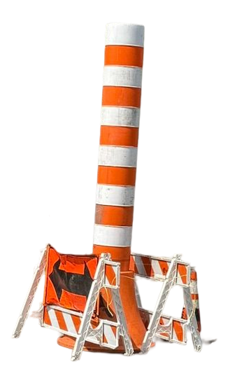
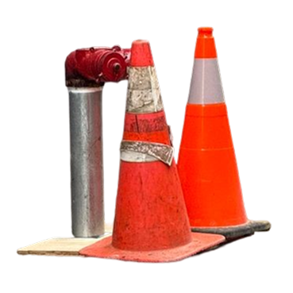
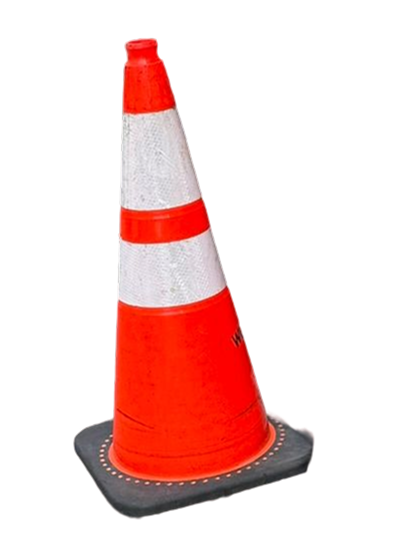
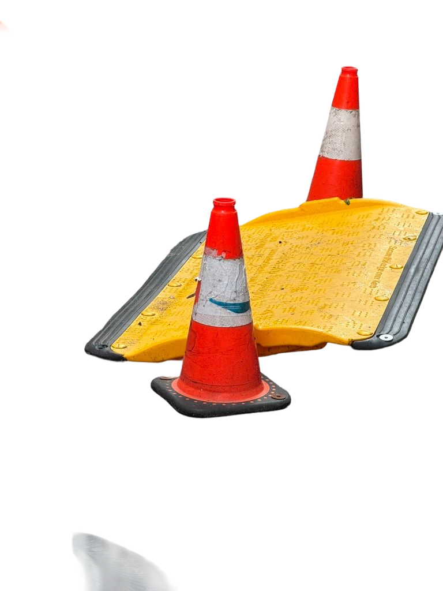
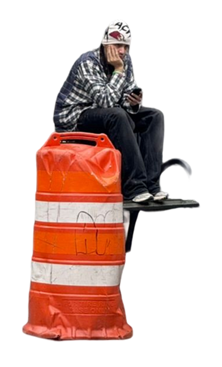
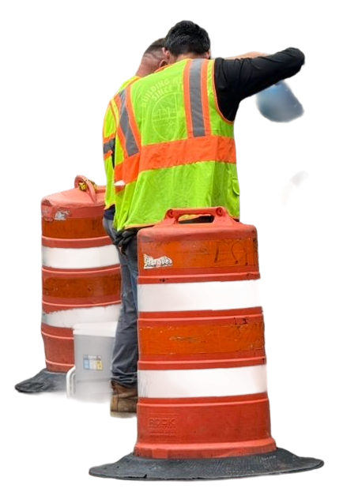
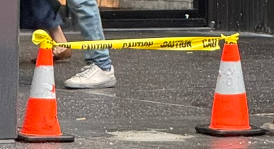
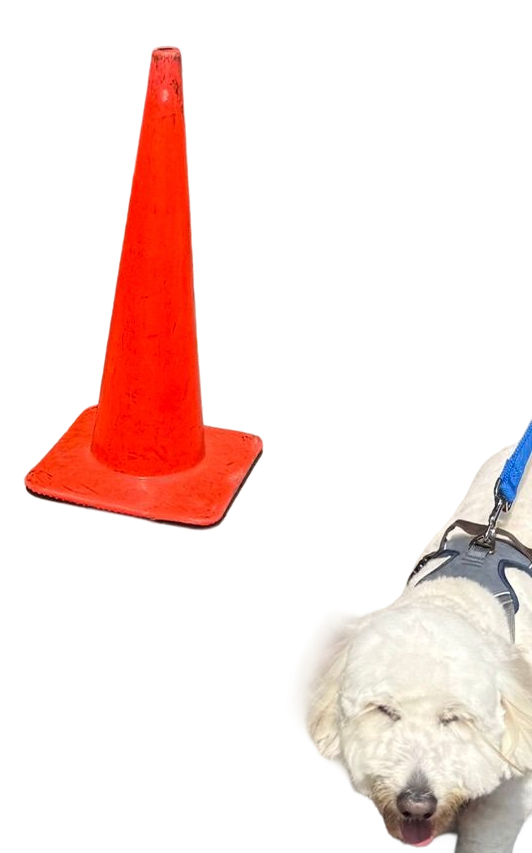

Inspired by As writer Anaïs Nin discussed in her 1968 book The Novel of the Future: It is the function of art to renew our perception. What we are familiar with we cease to see. The writer shakes up the familiar scene, and as if by magic, we see a new meaning in it.









